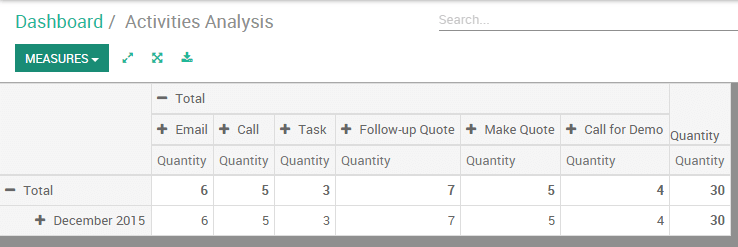
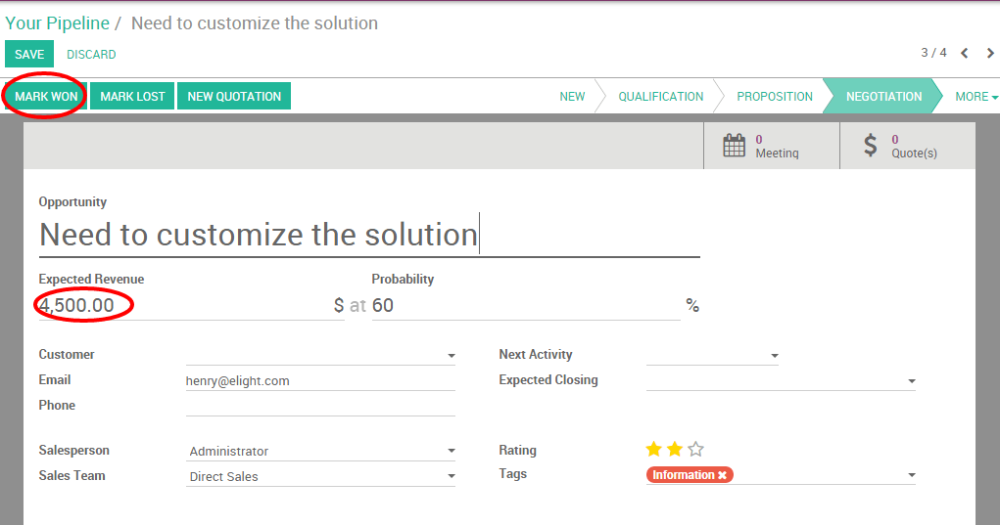

Sales professionals are struggling everyday to hit their target and follow up on sales activities. They need to access anytime some important metrics in order to know how they are performing and better organize their daily work.
Within the Odoo CRM module, every team member has access to a personalized and individual dashboard with a real-time overview of:
- Top priorities: they instantly see their scheduled meetings and next actions
- Sales performances : they know exactly how they perform compared to their monthly targets and last month activities.
Configuration
Install the CRM application
In order to manage your sales funnel and track your opportunities, you need to install the CRM module, from the Apps icon.

Create opportunities
If your pipeline is empty, your sales dashboard will look like the screenshot below. You will need to create a few opportunities to activate your dashboard (read the related documentation How to create a contact into Odoo CRM? to learn more).

Your dashboard will update in real-time based on the informations you will log into the CRM.
Tip
you can click anywhere on the dashboard to get a detailed analysis of your activities. Then, you can easily create favourite reports and export to excel.
Daily tasks to process
The left part of the sales dashboard (labelled To Do) displays the number of meetings and next actions (for example if you need to call a prospect or to follow-up by email) scheduled for the next 7 days.
Meetings
In the example here above, I see that I have no meeting scheduled for today and 3 meeting scheduled for the next 7 days. I just have to click on the meeting button to access my calendar and have a view on my upcoming appointments.

Next actions
Back on the above example, I have 1 activity requiring an action from me. If I click on the Next action green button, I will be redirected to the contact form of the corresponding opportunity.
Under the next activity field, I see that I had planned to send a brochure by email today. As soon as the activity is completed, I can click on done (or cancel) in order to remove this opportunity from my next actions.
Note
When one of your next activities is overdue, it will appear in orange in your dashboard.
Performances
The right part of your sales dashboard is about my sales performances. I will be able to evaluate how I am performing compared to my targets (which have been set up by my sales manager) and my activities of the last month.

Activities done
The activities done correspond to the next actions that have been completed (meaning that you have clicked on done under the next activity field). When I click on it, I will access a detailed reporting regarding the activities that I have completed.
Won in opportunities
This section will sum up the expected revenue of all the opportunities within my pipeline with a stage Won.
Quantity invoiced
This section will sum up the amount invoiced to my opportunities. For more information about the invoicing process, refer to the related documentation: Overview of the invoicing process